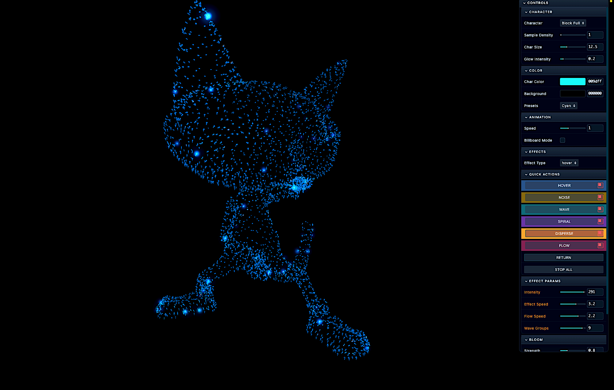
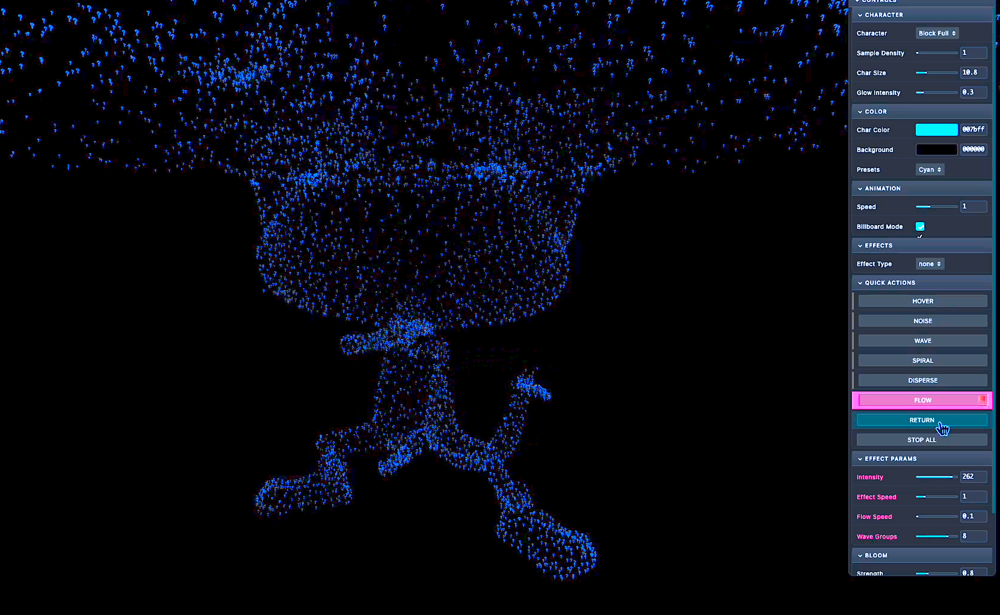
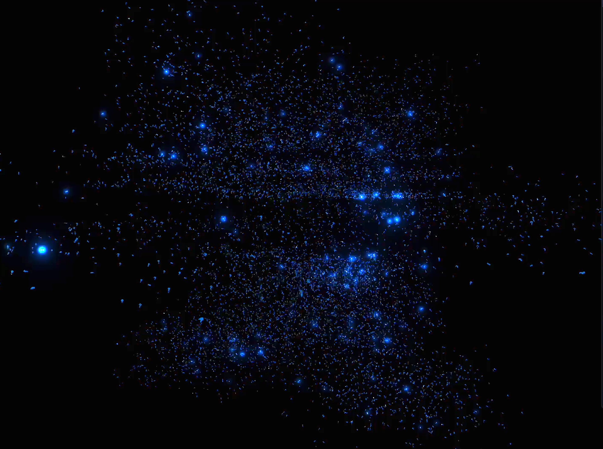
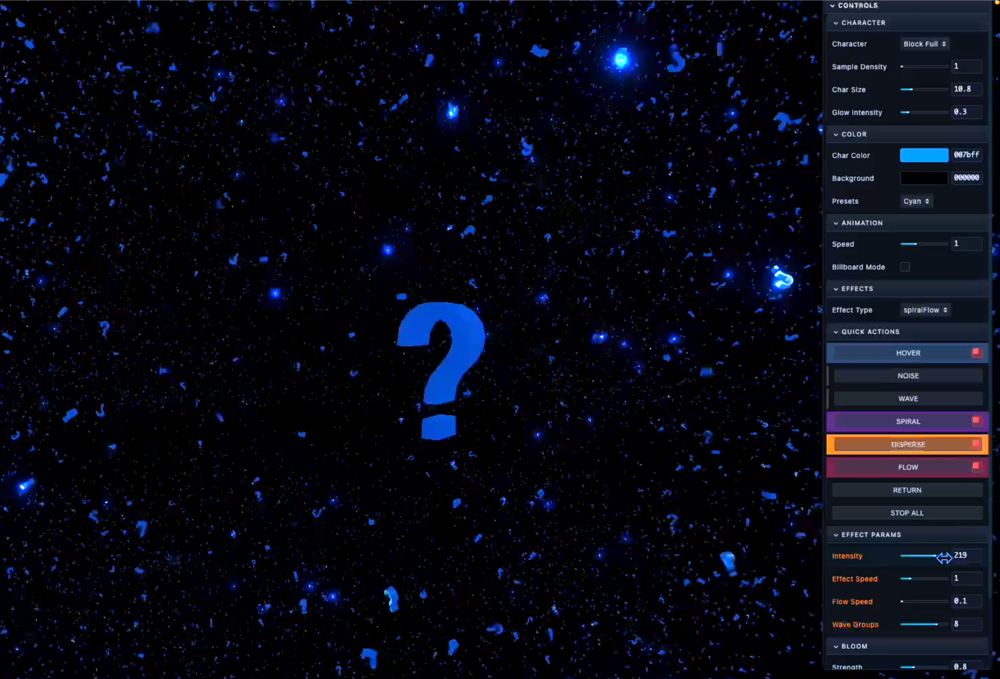
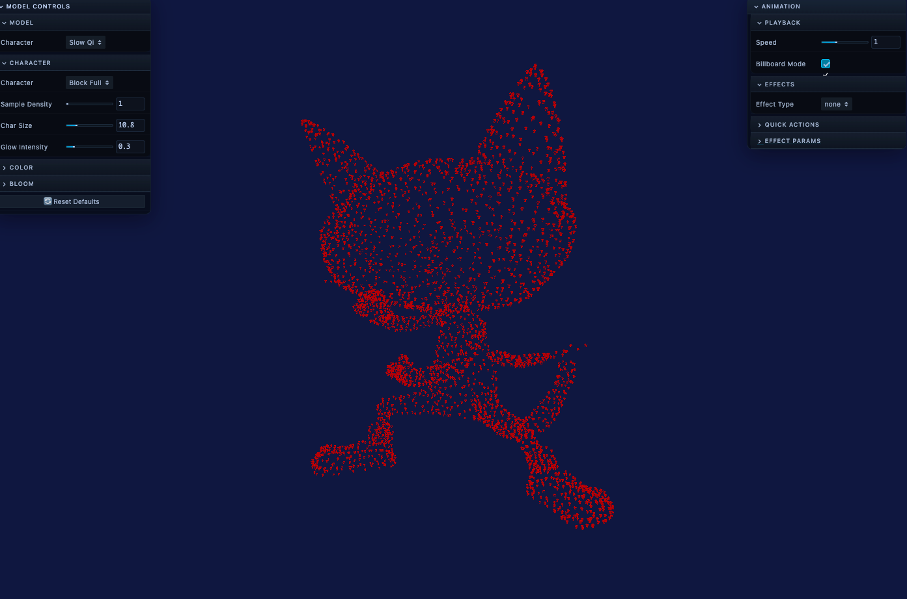
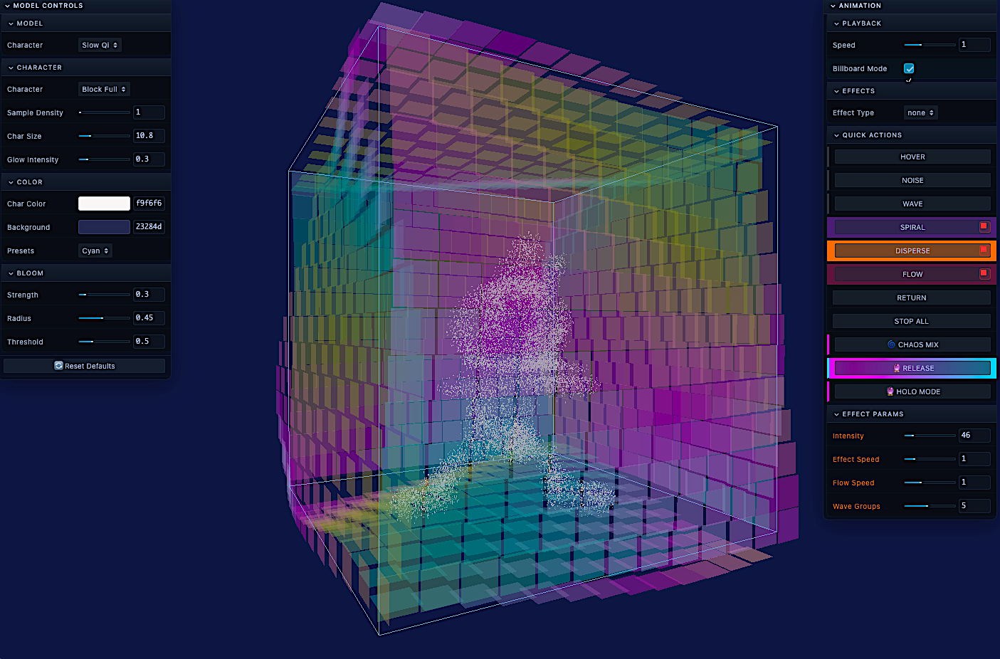

NUCAT
Real-Time ASCII Point Cloud Orchestration — "When your character wants to be a point cloud, you let them."






About the Project
NUCAT is an experimental real-time ASCII point cloud renderer that explores the deconstruction of form. It takes rigged 3D characters and "explodes" them into ~20,000 floating particles that dance, spiral, and disperse—all while maintaining the underlying skeletal animation in real-time.
The Technical Achievement
Most browser-based particle systems struggle with high counts. NUCAT achieves 60fps performance through a GPU-first architecture:
InstancedMesh Pipeline: Instead of rendering 20,000 individual objects, I utilized THREE.InstancedMesh to offload all particle transformations to the GPU.
Vertex Skinning Sampler: I engineered a custom sampling system that reads the transformation matrices of a rigged FBX character (Mixamo-rigged) in every frame. The particles "tether" to the animated bones, allowing them to disperse and return without losing the character's movement.
Layered State Management: A centralized state machine manages concurrent effects (Hover, Wave, Spiral) so parameters can be adjusted independently without affecting the base animation.
Chaos Mix: Generative Evolution
The "Crown Jewel" of the system. This isn't random jitter; it is mathematically driven entropy:
Golden Ratio (φ): Used to drive harmonious color shifts and intensity gradients.
Fibonacci Timing: Sequences are timed to organic intervals, ensuring the "chaos" feels alive rather than mechanical.
Quantum Interference: Effects are blended using probability patterns, creating emergent behaviors beyond explicit programming.
Tech Stack
My Role
Solo developer — character design, rigging, GPU optimization, particle systems, shader programming, and generative algorithm design.
Project Type
Technical Experimentation / WebGL
Particle Count
~20,000 @ 60fps
Core Features
Cinematic Landing
Custom 3D text intro using TextGeometry and animated camera paths.
Incubation Chamber
A holographic cube enclosure featuring translucent panels with animated edges.
ASCII Customization
Dynamic swapping of Block (█), Symbol (@), and Letter geometries in real-time.
Mystique Return
Custom easing-function library that handles the "smooth fade" back to the original form.
Bloom Pipeline
UnrealBloomPass integration for that signature "Quantum Glow" aesthetic.
GPU-First Architecture
Matrix-based skeleton sampling with InstancedMesh for maximum performance.
Creative Pedigree
Designed, Rigged, and Engineered by Pablo Cordero.
Full creative ownership from concept to execution: character design, skeleton rigging, and the "out-of-body" movement philosophy. This project sits at the intersection of Linguistics (ASCII symbols), Art (3D Character Design), and Engineering (GPU Optimization).